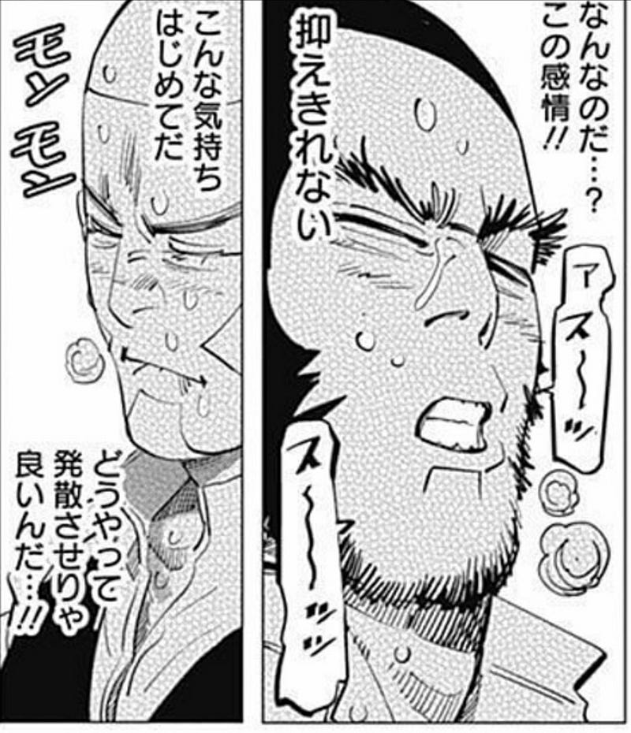

2017年末版：続巻を待っている漫画セレクション
2017年末版：続巻を待っている漫画セレクション
「今年読んでおもしろかったもの」だけではなく、それ以前から買っていて、まだ続きを待っているものもふくむ、我が家で続巻を待っている漫画のリストです。
今回初めてやるんだけど、来年このリストのどこまで自分の読みたいものとして生き残ってるのか、見てみたいのでまとめてみた。
大砲とスタンプ
（12/31追加）年末にジャケ買いしたらおもしろかった。続きは…また来年末かぁあああ
A子さんの恋人
A子さんの恋人 1-4巻セット
AmazonでのA子さんの恋人 1-4巻セット。アマゾンならポイント還元本が多数。作品ほか、お急ぎ便対象商品は当日お届けも可能。またA子さんの恋人 1-4巻セットもアマゾン配送商品なら通常配送無料。amzn.to
AmazonでのA子さんの恋人 1-4巻セット。アマゾンならポイント還元本が多数。作品ほか、お急ぎ便対象商品は当日お届けも可能。またA子さんの恋人 1-4巻セットもアマゾン配送商品なら通常配送無料。amzn.to
電子版出してくれよおおお。
ダンジョン飯
はよ続きでてくれー
乙嫁物語
外務省でやってるのも嫌いじゃないけど、早くこっちの続きを出してくれ…ください…
「中央アジア＋日本」対話・東京対話第10回記念
「中央アジア＋日本」対話・第10回東京対話の開催を記念するサイドイベント第三弾のご紹介です。中央アジアを舞台とした漫画家・森薫氏の「乙嫁語り」原画展の開催（第一弾），中央アジア料理動画の配信（第二弾）に続き，今回は文化交流イベントの第三…www.mofa.go.jp
「中央アジア＋日本」対話・第10回東京対話の開催を記念するサイドイベント第三弾のご紹介です。中央アジアを舞台とした漫画家・森薫氏の「乙嫁語り」原画展の開催（第一弾），中央アジア料理動画の配信（第二弾）に続き，今回は文化交流イベントの第三…www.mofa.go.jp
ゴールデンカムイ
自分の中で「冒険活劇」カテゴリから「マッチョムンムン男性同性愛と冒険活劇」カテゴリに移動しつつある。

きのう何食べた？
めんつゆ大好き。
まかない君
多分自分がこのレシピを採用することはないのだけど（好みの違い）、嫌いじゃない。
大奥
もう話も佳境だよなぁー。
めしにしましょう
普段の生活には全く参考にならないけど、まぁ読むよね！
センゴク権兵衛
最初の頃より俄然歴史オタ臭がしてきた。好きだからいいんですけど。
レイリ
自分の中ではまだおもしろいかと宣言できるかどうかわかるところまで言ってない。
ランド
第一巻の時には想像もしなかったところ来てるけど、少し「不思議な少年」の匂いがしはじめてる。
ちひろさん
説教臭いところもあるけど、絵が好き
七つ屋志のぶの宝石匣
題材が変わっただけで内容は「GREEN」の頃から変わってない。好きなのでよしとする。
メイドインアビス
面白いので、意味のないエロ小ネタをやめてほしい…
健康で文化的な最低限度の生活
役所大変。
KINGDOM
膨らませ方が楽しみ。
重版出来！
画伯がどうなるのか知りたくて続きを待ってる。
続巻はあるはずだけど、買い続けるか微妙
これらはここまで発売されている分は買ってるし、今後買う可能性も高いけど、ドロップする可能性もあるシリーズ。
書き出して見たが、俺は基本的にメジャーな漫画が好きなんだな